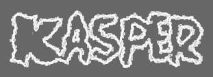

Knowledge Acquisition for Solving Problems
|
|
 Knowledge Acquisition for Solving Problems |
ResearchWe are interested in developing tools that enable users to specify new knowledge in natural language, so that they are more accessible to end users. We have developed an interface that allows users to modify methods by manipulating their paraphrase in English. It allows the user to select a portion of the paraphrase that corresponds to a valid expression and picking from a menu of suggestions for other expressions that can be used to replace it. Generating sensible suggestions is one of the challenging aspects of this work. |